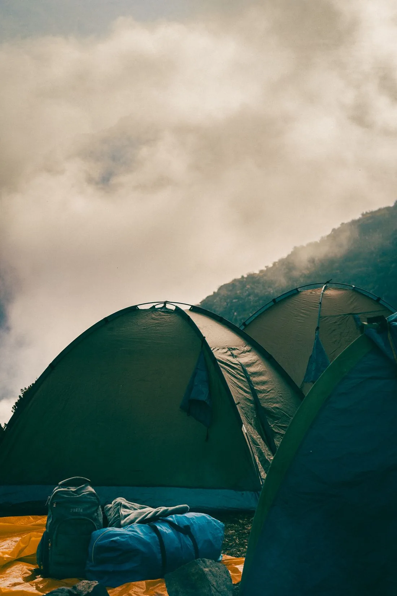
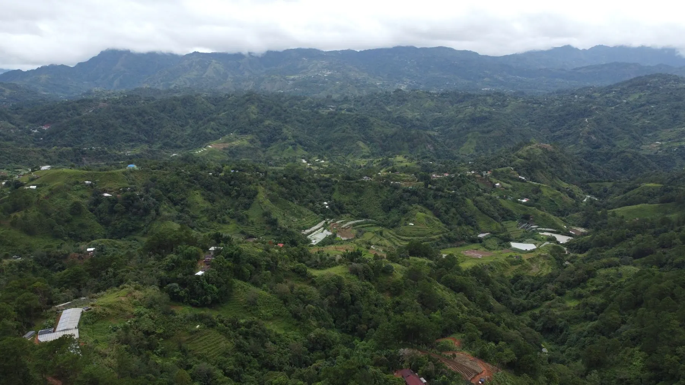
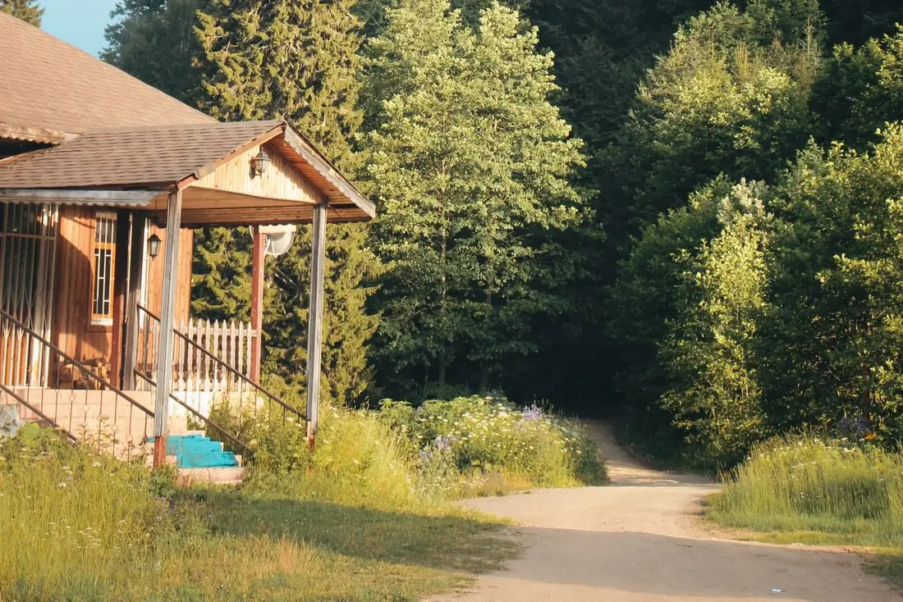
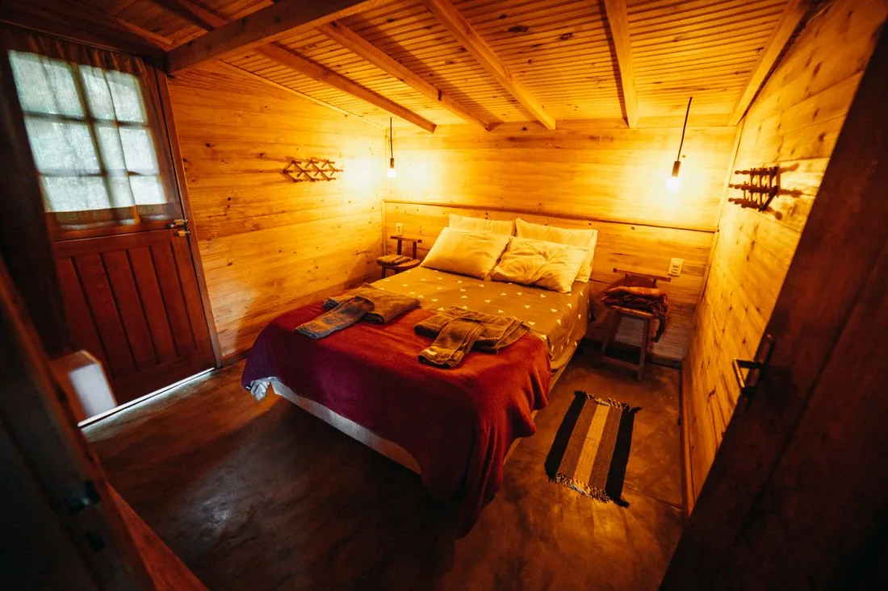
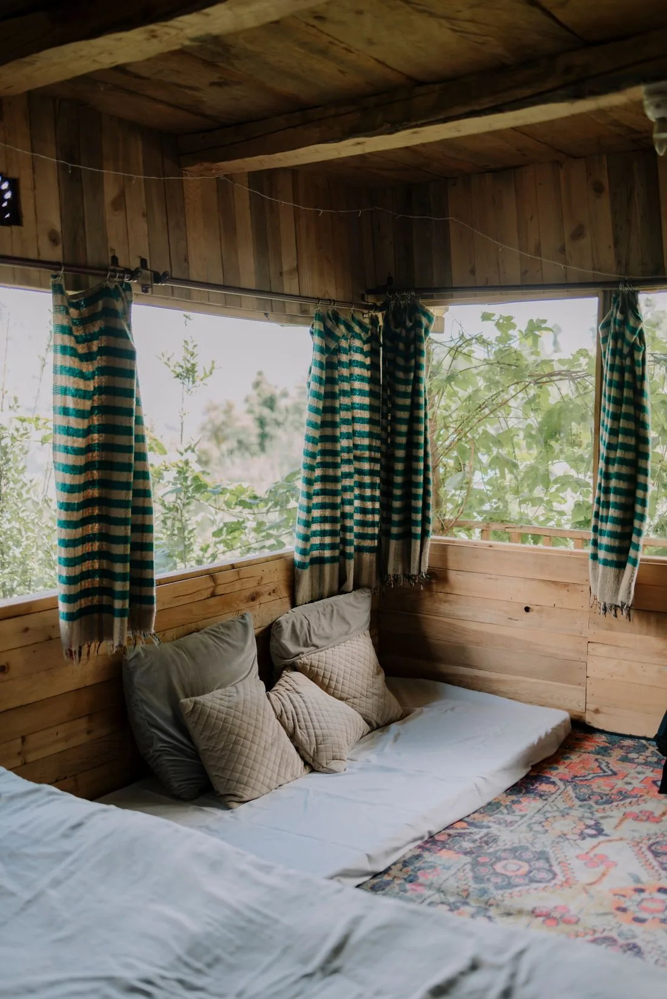

Stay · 2 guests
Ridge Glamping Tent
A simple, comfortable base close to the outdoors, with a real bed and sheltered deck.
₱2,800per tent / night
Explore ridge glamping tentWake to the hills. Follow a trail. Leave room for nothing in particular. An imagined mountain retreat for quiet weekends, small adventures, and meaningful time together.
Small groups. Guided days. A lighter footprint.


A visual reference for the fictional highland eco resort concept.
Amihan Ridge is a fictional highland hideaway in Atok, Benguet. Modest cabins, guided outdoor days, and a lighter approach to travel make space for the landscape and the people who call it home.
Simple habits for a thoughtful mountain stay.
Refill bottles, sort waste, and take every wrapper back from a walk. Leave plants, flowers, and rocks where they belong.
The concept favors local guides and seasonal ingredients. Respect farm work and ask before entering private land.
Stay on designated trails, use water thoughtfully, and let guides decide when conditions call for a different plan.
Choose a tent, a cabin, or a lodge for your group.
All stays & guided activities
A simple, comfortable base close to the outdoors, with a real bed and sheltered deck.

Warm timber textures and a shared living nook for an unhurried mountain weekend.

A roomy base for a family reunion, a small team, or friends traveling together.
A quiet garden walk or a longer trail day? Find a starting itinerary that suits your group.
Ask for garden walks and cabin time in place of strenuous trails.
Package capacity and final inclusions need confirmation.
Read the full itineraryStay two nights and receive a guided sunrise trek at no extra charge. Sample offer; subject to guide availability, fitness suitability, and safe trail conditions.
“A cabin, a warm drink, and a morning walk would be just the reset I’m looking for.”Sample nature traveler feedback · Illustrative, not a verified review
The garden walk is a gentle option. Sunrise and longer treks require a suitability discussion with the guide; difficulty, weather, and individual health must be considered.
Bring layers, a rain shell, grippy closed shoes, water, a torch, and personal medication. Pack out any waste from trail days.
Garden visits can suit supervised children. Ask about route suitability before booking a trek; there is no blanket age guarantee.